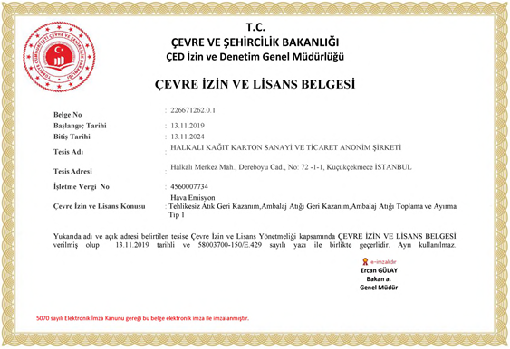

Hakkımızda
Kağıt sanayinin ilk özel girişimci firmalarından biri olarak 1976 yılında İstanbul'da kuruldu. 4.500 ton/yıl olarak çalışmaya başlayan karton makinemiz KM1, yapılan revizyon ve yenileme çalışmaları ile yaklaşık 40.000 ton/yıl kapasiteye ulaşmıştır. Üç farklı kategoride (ebat, yapıştırma, bobin) ürünleri sunulan makine, halen konusunda Türkiye'nin önde gelen makinelerinden biridir.
1995 yılında 15.000 ton/yıl olarak çalışmaya başlayan kağıt makinemiz KM2, yapılan revizyon ve yenileme çalışmaları ile Fluting ve Testliner üretiminde yaklaşık 110.000 ton/yıl kapasiteye ulaşmıştır.
Firmamız 8.000 m2'si kapalı olmak üzere, 45.000 m2 bir alan üzerinde hizmet vermektedir. 2002 Yılı Nisan ayında devreye giren 5.3 MW/h kapasiteli Oto Prodüktör Santrali, firmanın kendi elektrik ihtiyacını ve buhar ihtiyacının da bir kısmını karşılamaktadır. Firmamız şimdiye kadar tamamen öz sermayesi ile büyüyüp, ödenmiş sermayesini 34 Milyon TL'ye yükseltmiş ve halen yaklaşık 250 kişi istihdam etmektedir. İmalatında %100 atık kağıt kullanan firmamız, dünya standartlarında modern, biyolojik arıtma tesisleri ve çevre düzenlemesi ile konusunda örnek bir kuruluştur. test
